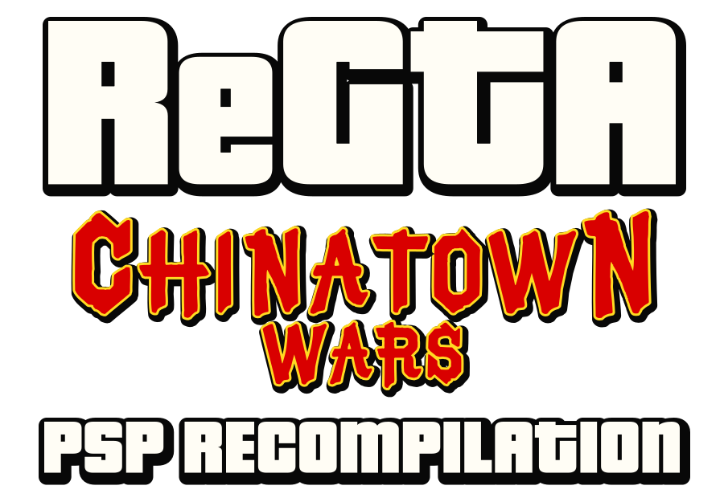
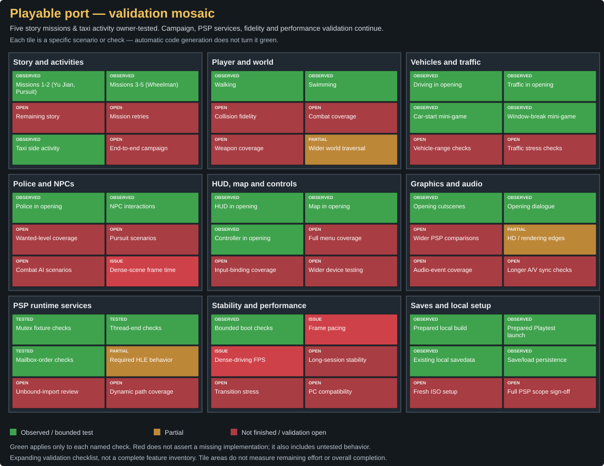
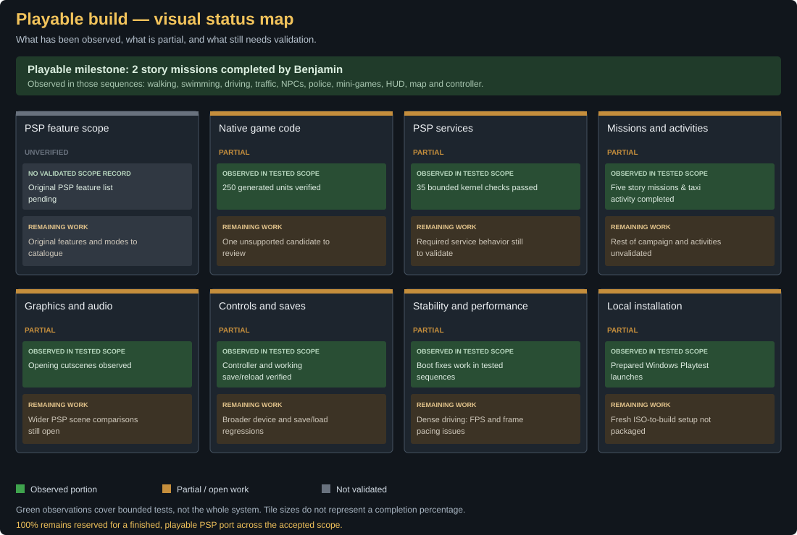

Five story missions completed
Benjamin completed five consecutive story missions (up to 'The Wheelman') and a taxi activity using normal controls. Cinematics, dialogues, mini-games, and save/reload persistence worked cleanly.
Native C++20 · Windows x64 · PSP Europe

Experience the original PSP game, recompiled natively for Windows. A playable local Playtest, with optimization and broader validation underway.
by Benji Paname
Evidence updated 2 November 2026. A passing test suite is not a full-game fidelity certificate.
C++ is now the mainline. The previous Rust implementation is preserved as project history.
Benjamin completed five consecutive story missions (up to 'The Wheelman') and a taxi activity using normal controls. Cinematics, dialogues, mini-games, and save/reload persistence worked cleanly.
Walking, swimming, driving, traffic, police and NPC interactions were observed in the owner playtest. The rest of the campaign still needs validation.
Window-breaking and vehicle-start mini-games, HUD, map and controller input worked in the tested sequences. Keyboard controls remain available.
The next priority is consistent performance.
Completed playable recompilation

Green: observed or tested in the named scope. Orange: partial. Red: work or validation still open. Each tile is a scenario, not a generated routine. This expanding checklist does not estimate overall completion or remaining effort.

100% is reserved for a finished, playable PSP port across its agreed original-game scope. No reliable global completion percentage has been established yet.
Benjamin completed five story missions and a taxi side activity in the private Playtest, with working save and reload persistence. Remaining campaign coverage, performance optimization, audio and rendering polish continue.
What must be validated before 100%
These are two views of the same static inventory: translation coverage weighted by original routine size, and the number of translated routine candidates. Automatic generation is not equivalent to Kryo.to’s source-porting workflow; the percentages cannot be treated as equivalent completion scores.

Gameplay can drop toward 20 FPS, with uneven frame pacing, particularly when driving through dense traffic and pedestrian areas. Optimization is ongoing.
The migration rebuilt 29 runtime components and passed 35 kernel checks. Existing Bink and FIFO/priority fixes are retained. Compiler warnings and untested cases remain.
250 generated translation units and 166 overlays support the local build. Original game content, saves and test captures stay private. The public repository contains licensed runtime source and tooling.
Evidence before promises. No release date announced.
Profile FPS and frametimes, focusing on dense driving scenes.
Validate the story progressively, mission by mission.
Investigate remaining PSP service, rendering and hardware-specific issues.
Improve the launcher, configuration and reliable local updates.
Explore optional mouse-driven interactions inspired by Android. Not implemented yet.
Retain the choice of classic PSP controls alongside future PC interactions when available.
Support independent development
Your support gives Benjamin more time for profiling, reverse engineering, testing and documentation. The immediate focus is performance and validating more of the game.
Donations are voluntary. They do not buy the original game, copyrighted content, a release date or guaranteed completion.